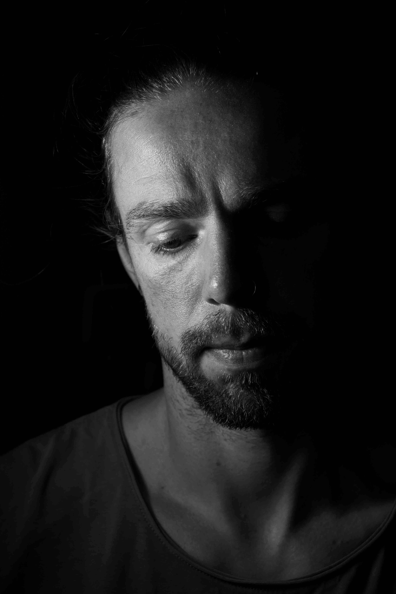
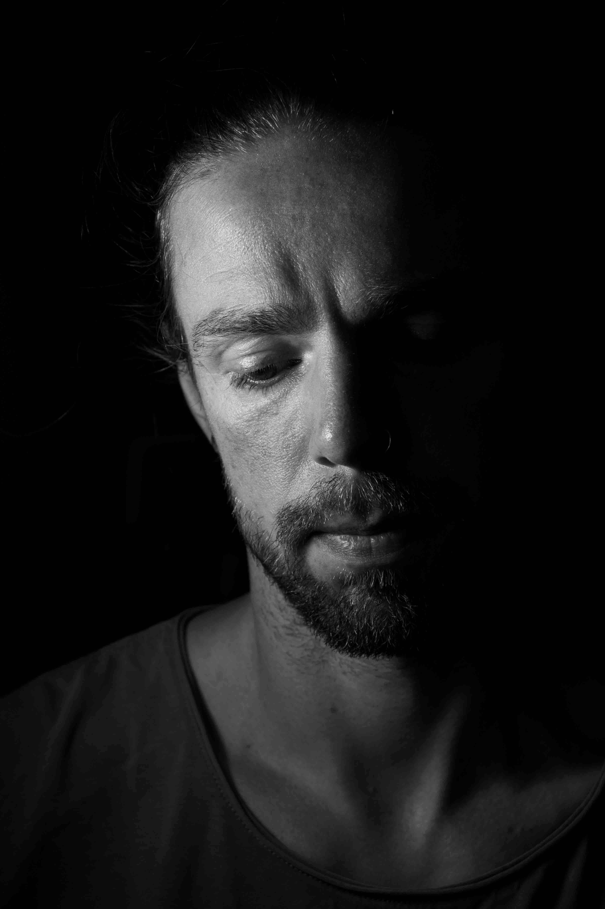
“Overwhelmed, disappointed, guilty”
Neal works in the gap between the production of research, and how that science is reliably summarised and used in decision-making in sectors related to the environment, sustainability, and climate.
Everything I read now is another record broken, another disaster, seeing something we never thought we would see in the near future. I find this too much to deal with sometimes, it's overwhelming. It's especially hard to care about the small things in life when you know there is and will be so much suffering on the planet: "what have we done...?"
This is not where he thought we would be now - we should have done more. He explains that it was clear to him that things were bad when he was younger, and that pushed him to work in conservation so he could make a difference. People know more now, he says, but it feels like little has changed. “When you’re up against capitalism and public and political inertia it’s hard to feel like your small piece of the puzzle is having any impact at all”.
He says he is scared about how we and future generations will cope with all the problems that have been knowingly swept under the carpet for decades. “It’s hard to see how things won’t get a lot worse for some people, and I feel guilty that I haven’t been able to do more. I feel impotent.”
“Do I feel hope? I don't know. Hope seems very passive. We're beyond hope, thoughts and prayers. We need to drastically change how we live. Can you hope for that?” It's possible, but we have to do so much more than hope, he says.
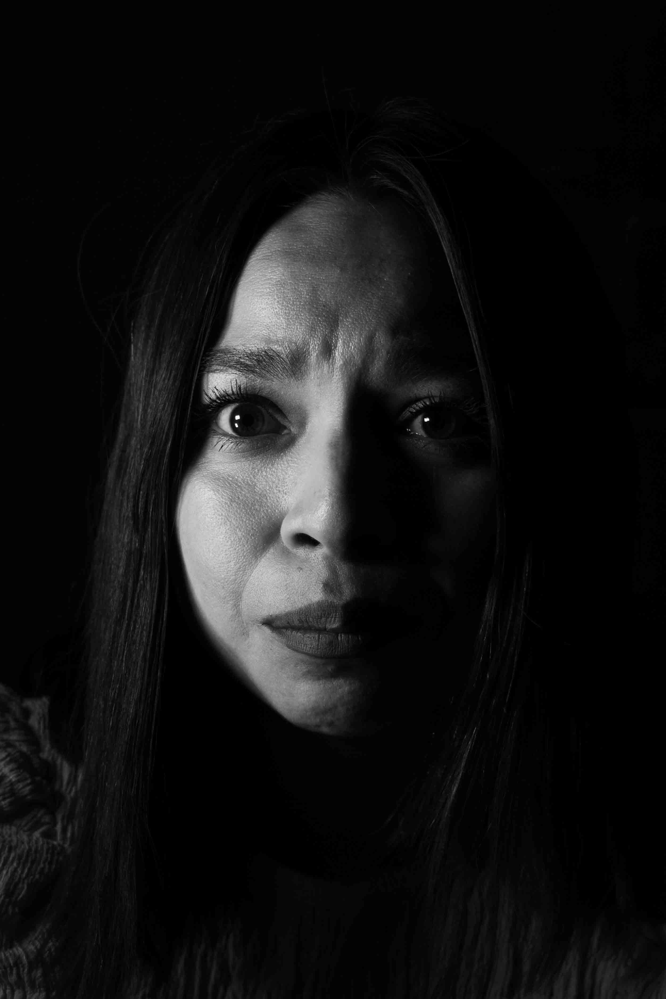


“Hypocritical, unhelpful, uninspired”
Nhilce is a researcher working with hydrology and disaster risk reduction, interested in the role of water in sanitation and development.
“People often think I’m saving the world with my job”, she tells me, “when actually, I’m behind a computer all day”. She feels hypocritical when facing people’s expectations of her based on her job. She also explains that the hypocrisy manifests itself in how she lives her life, not as sustainable as she could: “I get anxiety reading about other people trying their hardest to live well”, but she confesses to not knowing exactly how we can live sustainably, “it’s frustrating”.
She tells me that she doesn’t feel helpful anymore, questioning herself. This self-doubt is clearly challenging who she thought she was. “Doctors and nurses can see the impact of their work. With what I do, I really cannot see how I’m helping”.
“I feel uninspired”, she confesses, “so how can I help to inspire others?”. She explains that even the young people she talks to through her youth outreach work aren’t as motivated, that just the last 12 months has seen a big drop in their enthusiasm. “If I start to think about it, nothing makes sense”.
She tells me that she does feel hope in a way: “My hope is that the kids of my friends start growing up with these ideas of being fair and environmentally conscientious. They see their parents’ behaviour and it sinks in. I have hope on that”


“Frustrated, detached, connected”
Aina is a science communicator with a speciality in sustainable lifestyles, and sustainable consumption and production.
She tells me that she is frustrated: “there is so much emphasis on more research, more projects, more solutions. We have solutions already, but we don’t want to pay attention. And we can’t think the solution is purely technological – it has to be about how we interact with the world – but there’s very little progress and emphasis on that”.
The detachment that she feels is partly out of despair, but also partly strategic: “it’s for my survival”, she explains. “People might think this is negative, like giving up, but it’s not. I don’t feel like science alone can provide the whole picture nor all the answers. But in my work we aren’t encouraged to look beyond the ‘hard facts’. Involving values and emotions is usually frowned upon in the research world. It makes the work a bit inhumane. So, I detach myself from work and find a way forward via culture and art, and connecting with other human beings. When you do that, you start thinking past yourself. That’s ultimately why we’re facing the problems we are.”
She goes on to explain that through detachment she finds new connections - with other people she might otherwise not meet: “You meet different people, different perspectives, different lived experiences – that’s where the creativity and positivity starts.”
“I do feel hope”, she tells me, “but not in the space that we work in. Some people find hope in research and solutions, but I don’t. I need to look further than technical solutions. It’s in other ways I feel hope – in seeing how culture can help us relate to each other better, and breed new ways to coexist beautifully. There I feel hope.”


“Chaotic, apathetic, faithful”
Patricio is a communications and visual changemaker. He makes visible the invisible by translating water and climate programmes and research into digital content that nudges people to make better choices.
He tells me that he has wanted to work in environmental advocacy for a long time, but that the chaotic state of the planet today can sometimes be too much to bear.
Despite his awareness of the chaotic situation in which we find ourselves, he remains grounded. “Yes, things are bad”, he tells me, “but a survival mechanism kicks in that stops this knowledge from generating fear and panic: a welcome apathy, perhaps”.
He trusts that whatever the future holds will be good: “Welcoming the chaos - the loss of individual and collective energy to keep changing things - is part of becoming aware: the awakening of consciousness”. He tells me that perhaps by witnessing devastating realities we will become better versions of ourselves and lead the way to transformation.
He tells me he does have hope: “I’m holding on, knowing that the best is yet to come”.

 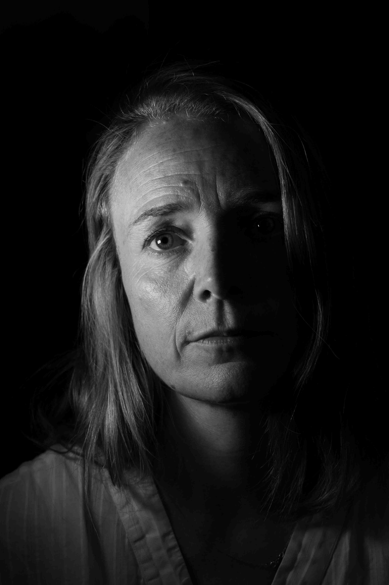
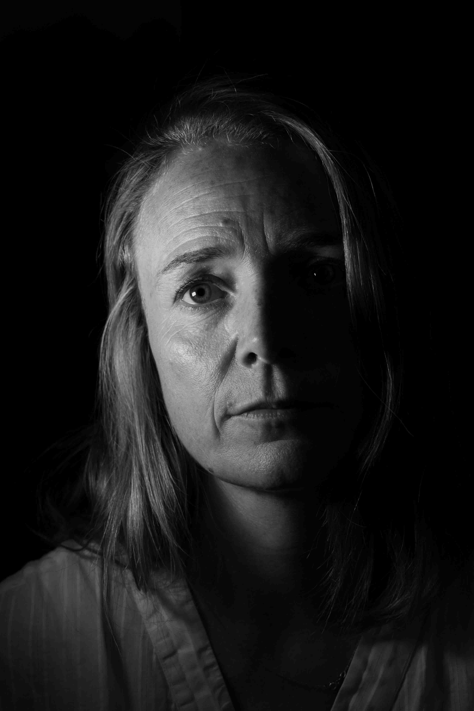
“Ashamed, outraged, determined”
Fiona is a social scientist working to understand what factors affect people’s choices, particularly with respect to access to energy and energy poverty.
She explains to me that the state of the planet and the climate crisis is increasingly featuring in her discussions with her research participants in Africa; something that often feels like a bigger issue than the objective of her work on cookstoves and energy, leaving her sometimes feeling useless. At the same time, she feels ashamed that the research and practice community hasn’t come further and done more: “I cringe sometimes when I write about the current state of knowledge in research papers – we know this and yet we see no action. It’s repetitive and depressing”.
She tells me that she feels outraged – “it’s an explosive, disruptive shock. But perhaps it’s a positive thing in a way, she explains: “it feels like it might lead to some kind of shift, some watershed, or a catalyst”.
Her children help her to be determined, though – she can’t give up on them. They have embraced buying second hand and understand why, she explains - clearly humbled but proud. The children even been a driving force to reduce the family’s impacts on the environment.
When I ask her about the future, she explains she doesn’t feel hope: “the word hope is not good enough – it’s far away and doesn’t imply action. Hope won’t drive me forwards. But being outraged, having a sense of purpose, I need something that drives me not to give up, but I don’t want to call it hope.”
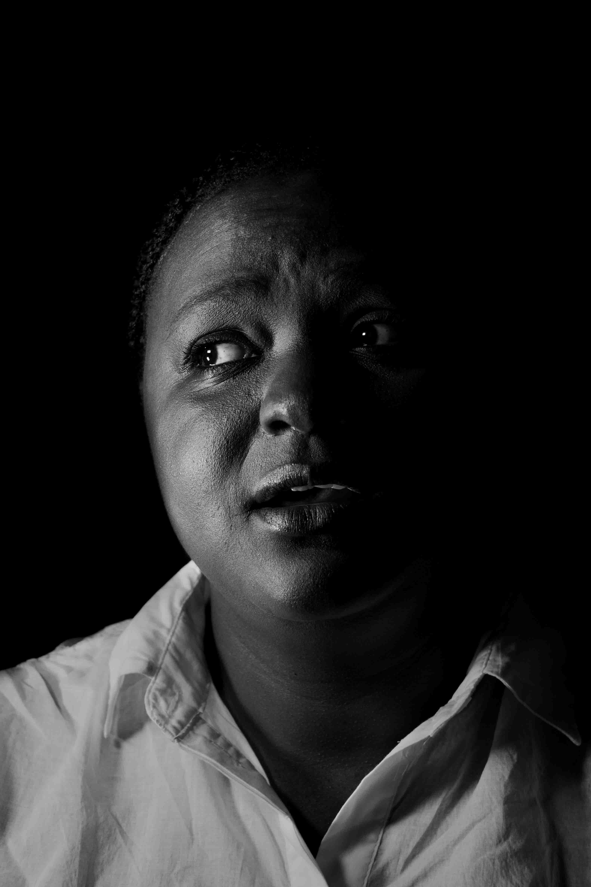
 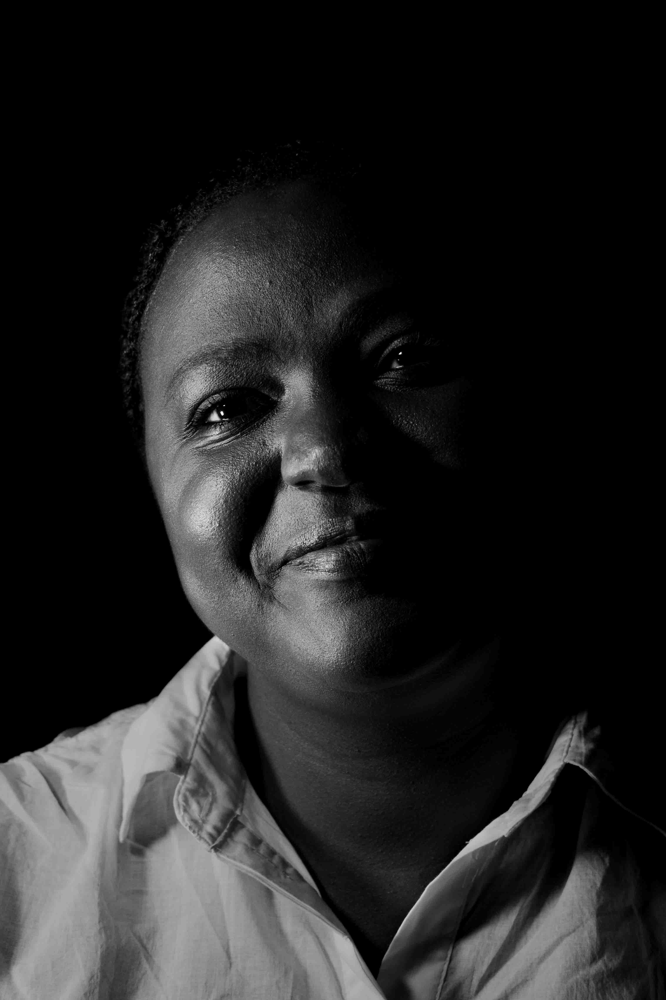
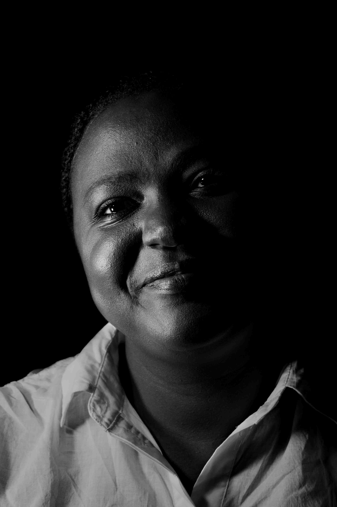
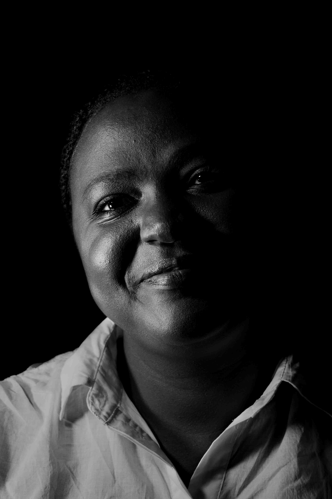
“Conflicted, innovative, collaborative”
Brenda is a communications specialist working with water and innovation related research.
She tells me that coming from Kenya and then having 7 years’ experience in Europe she has struggled with seeing a lack of meaningful impact of a lot of Western research in her country. “I always want to give the African perspective first, but I feel conflicted – because I’m now part of that system and feel obligated to do more – that I should help to find solutions working from the inside.”
She explains that she sees a lot of talk about the planet, but what she feels is lacking is implementation of already existing solutions. “Sustainable business is the solution to the climate crisis in my opinion – innovation. It’s time the research world collaborated more with business to find solutions”. She tells me that her background and upbringing give her a different perspective: “A large percentage of Nairobi’s youth population is unemployed, so the environment is not their prime concern, unfortunately. Of course, it’s important, but from that perspective there are other urgent things that need to be solved first, so we can get everyone on board.”
She also feels collaborative: “It doesn’t matter how much knowledge you have on a subject – there is always something you can learn from a local expert. A fisherman who has worked his whole life on Lake Victoria understands the impact of fishing in the region better than anyone else, for example.” She wishes that people could be more collaborative so that businesses and projects were inclusive and therefore sustainable in the long run.
“I don’t want to be a pessimist, I’m generally a realist”, she explains. “So yes, I’m hopeful. But there is a lot of work that needs to be done to get everybody on board – we need everyone on board if we’re to win this war. Less talk, more action.”


“Frustrated, disastrous, faithful”
Guoyi is a researcher focusing on water, climate change and disaster risk reduction, particularly focusing on the role of China.
Despite his calm presence, he describes at length how frustrated he is with the state of the planet and humanity’s poor response: “you keep hearing the same message again and again, but mistakes keep being made”. He tells me of his frustrations with the way that China is described – confrontational and accusatory – “any solution has to involve China!”. But he manages to stay calm by an inherent belief that perhaps there is some logic to the way things are. This calmness, he tells me, can perhaps be traced back to his Taoist roots, and he explains an old Chinese adage about the sky falling that reflects the benefits of not worrying about things outside your control.
Some experts believe that the most likely outcome for humanity will be very narrowly escaping total disaster, he tells me: “and we are already entering a time where we are seeing all kinds of disasters”. Again, he tells me that he takes comfort from the fact that we may need such disaster to get to a tipping point where things are forced to change.
He tells me that we just need to have faith that we will pull through. He takes motivation from finding his own meaning in what he does, working towards open dialogue and trying to understand one another: “sometimes, we’re too wrapped up in whether we are making a difference. But as long as I see meaning in what I do, that’s good enough motivation for me to get up every day and do it.”
He tells me he feels hope – that it is implicitly encompassed in faith: “this enduring power of human survival – that’s where my hope lies.”

 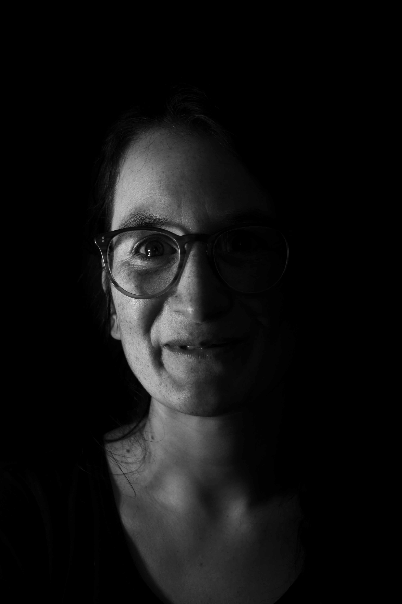
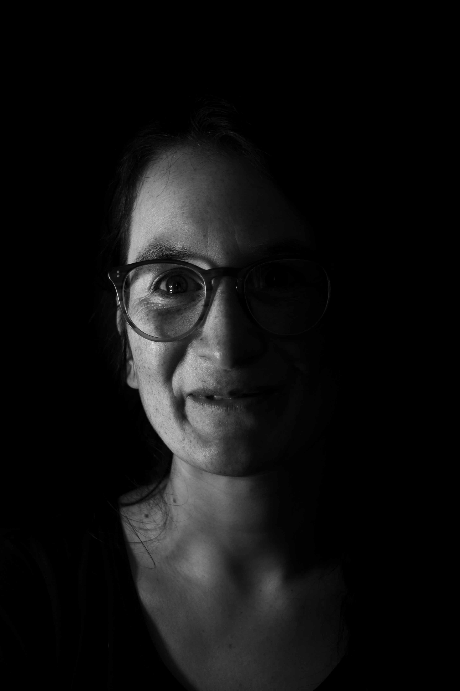
“Sad, disgusted, determined”
Claudia researches the politics and practicalities of how economies across the world can be made more sustainable as they transition away from fossil fuels.
Her sadness is clear from the outset: “It’s not that we don’t know what to do. We don’t have the exact solutions for every part, but we know the bigger part. It’s just not happening”. “The sadness comes in waves”, she says through tears, “Being focused on one thing can help to keep it aside, but only temporarily. I feel I can’t live my life – why should we even consider not having kids? We’re not fully free – I envy people who don’t know as much as I do…”
She tells me she is disgusted by the greed and hypocrisy in the system: “The greenwashing disgusts me – so much smart thinking is used to get around policies and recommendations. Why can’t we use that intelligence to make the world better?”
“I have this determination to continue to improve”, she explains, “Doing my research, trying to live better – little by little. It’s just overwhelming to try to do it all at the same time.”
“I do feel hope”, she says, “But the kind of ambition level we need… that is like grieving for me. We’re losing hope for 1.5 degrees – even 2 seems more challenging. The hope is that we achieve the least bad of the possible alternatives.”


“Hopeless, powerless, resilient”
José Luis is an environmental scientist investigating the role of community-led initiatives in improving the sustainability of food systems.
He likens his feelings about the state of the planet to watching an asteroid hurtling towards us: sometimes he feels nobody else can see it; every day it is a little closer; and we seem to be doing nothing about it. His desperation and frustration are clear. “When people find out what I do for work they often say ‘ah, great that you are working to save the planet!’ But I don’t know how to respond, because it doesn’t feel like we are…”.
Despite this, he also feels that researchers need to stay strong in the face of fear and frustration. “Any victory is a huge victory. We work for the public good – we are duty-bound to carry on. We scientists have to work on radical sustainable transformative solutions, and escape from this highly competitive and paper-oriented scientific system that’s disconnected us from reality”.
“I don't have any hope”, he tells me, apologetically, “Considering the scientific knowledge we already have about the topic and our behaviour and lifestyle, I think there’s no place for hope. Many people are already dying, starving or migrating because of the impacts of climate change. The only thing we can do now is to make the problem as least harmful as possible for the planet and people. We have to be resilient.”
 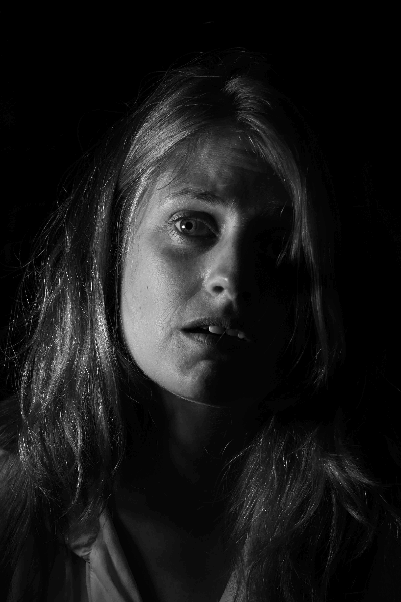
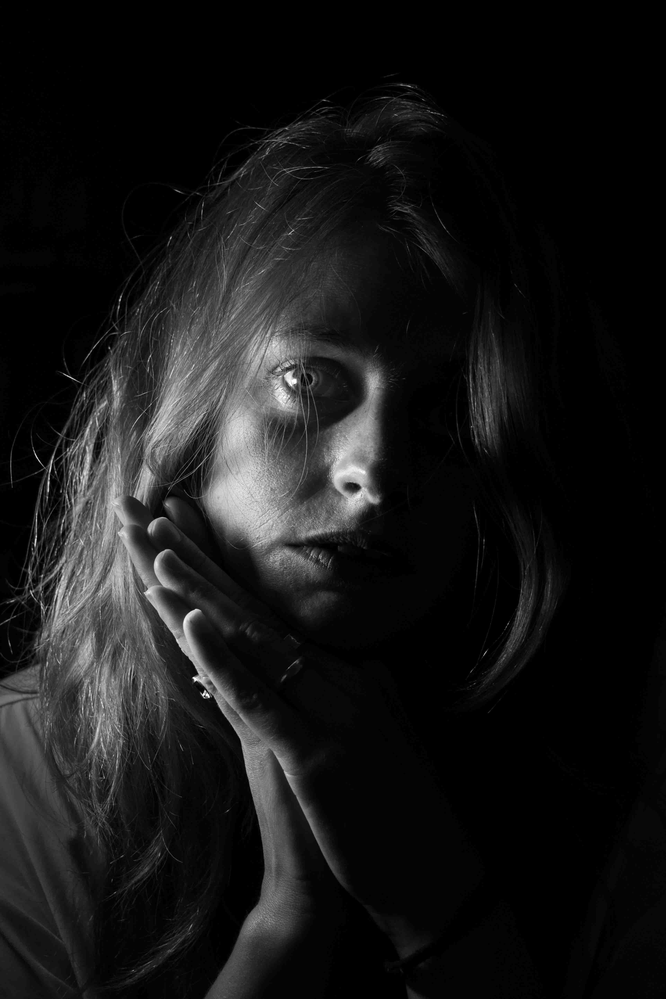
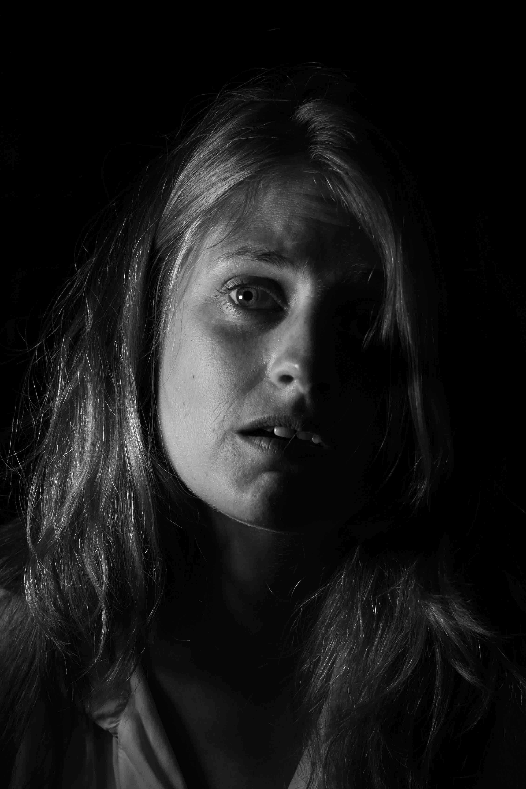
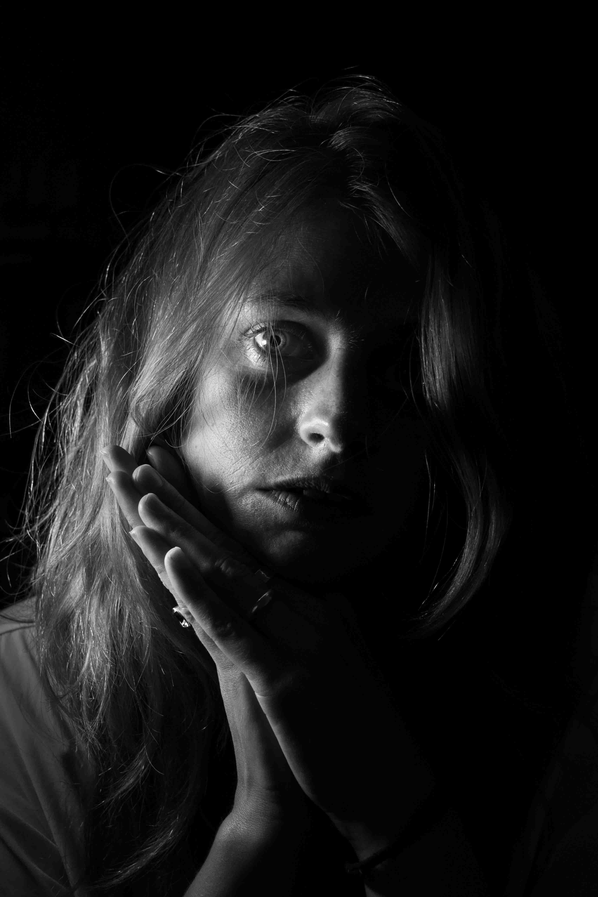
“Anguished, awestruck, passionate”
Anneli has a background in environmental science and sustainability and is a science communicator.
It is immediately obvious that the state of the planet is affecting her. She is deeply empathetic and explains that this year has been a personal tipping point for her, ignited by the heatwaves in Western North America. She is very aware of what humanity is beginning to endure from climate change, and she feels this pain keenly. She tells me that the anguish she feels comes in waves and feels visceral, like a loss, like grief: “it’s really happening!” she whispers.
But she also feels in awe of mother nature – we have changed things so much that the entire planet is responding: “it’s like a sick body reacting, and it’s fascinating to see what it can do - what it can do to people”, she says.
She explains that hope is not enough, but maybe passion is: “we have to have passion to turn things around. We need to make people passionate about the planet”. She feels it is not hope that we need right now - that she cannot feel hope. “We need a force to carry on, more than hope. It needs to stem from love, from inside ourselves. I wish I could say that I feel hope, but I don’t. We need action!”.


“Annoyed, brave, compassionate”
Fedra heads a team of sustainability researchers and is on a personal quest to bring innovation into sustainable & societal transitions.
Her positivity and can-do attitude is infectious and she has a relentless and renewable (pun intended) energy driving her forwards. She is annoyed that, while we all know what needs to be done to improve the planet and make society more sustainable, we’re not doing it: “how hard is it?” she says, incredulous.
She also tells me that we need to be brave. “We need to act now, instead of sitting around and just talking”, she says, “and we have to call it out when people are spinning a story that isn’t correct”. She is a hard worker, eager, focused, and driven, in an effort to protect what we have left. She tells me that she feels it isn’t too late: “It’s not all lost yet”, a reference to a song that has deep emotional meaning for her. It’s evident that she believes this, but more than that – she lives it.
She tells me she feels compassionate, something she also feels we must embody, since climate change won’t affect everyone equally. She believes that she is extraordinarily lucky to have been born in the European Union: “we need compassion with those who don’t have the ability or power to act or live accordingly”.
When I ask whether she is hopeful for the future, her reply is clear and irrefutable: “yes, I am!” Through her life, filled with music, her other passion, resonate the lyrics of another song: “people still marry more than they divorce, people still laugh more than they grieve”. “Ultimately”, she says, “I believe people will pull through – I have huge faith that they will”.


“Outraged, betrayed, hopeless”
Carla is a researcher working on the connection between management of watersheds and societal access to water and sanitation.
She tells me that she is outraged that we are leaving so many people behind as environmental problems exacerbate, that the world is so unfair: “some of us are in a position to speak and act, but a lot of us aren’t doing anything”. She is deeply aware of our privilege in Europe, and seems appalled that we’re not using it to protect people who can’t protect themselves.
“I feel betrayed by other generations – and now by promises being made that I know can’t be fulfilled”, she tells me. She wonders if there is anything shocking enough to force the people in power to recognise the crisis and act. She feels angry, unheard, put aside. She’s been told there’s no use in being angry, and perhaps this is the cause of her cycling from rage to apathy.
The apathy manifests itself as a feeling of hopelessness, “I’ve been robbed of my dreams”, she explains. At the same time, the world of research in which she works feels ineffective: “it feels as though it’s just about publishing research articles, but not telling the people who need it, just other researchers”. She tells me she doesn’t see the point of her work, and that anyone could come along and do her job. She seems racked with guilt for having these thoughts: “it feels like we’re not allowed to feel this way”.
“No, I don’t feel hope. I don’t see any light at the end of the tunnel”, she confesses. She says we need something bigger – a revolution, perhaps. “But I don’t feel hopeful about the future”.

 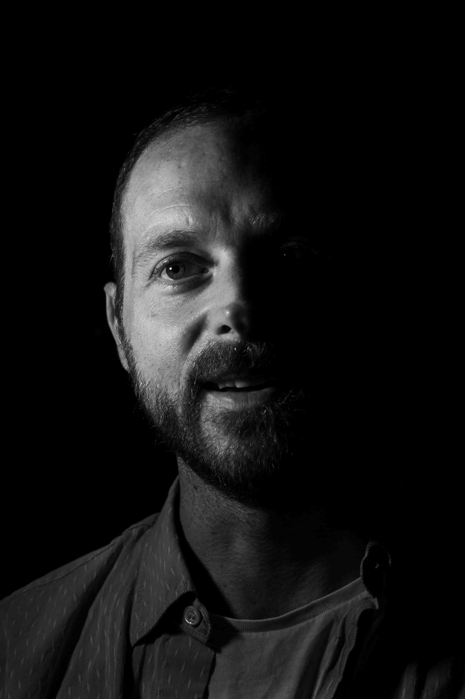
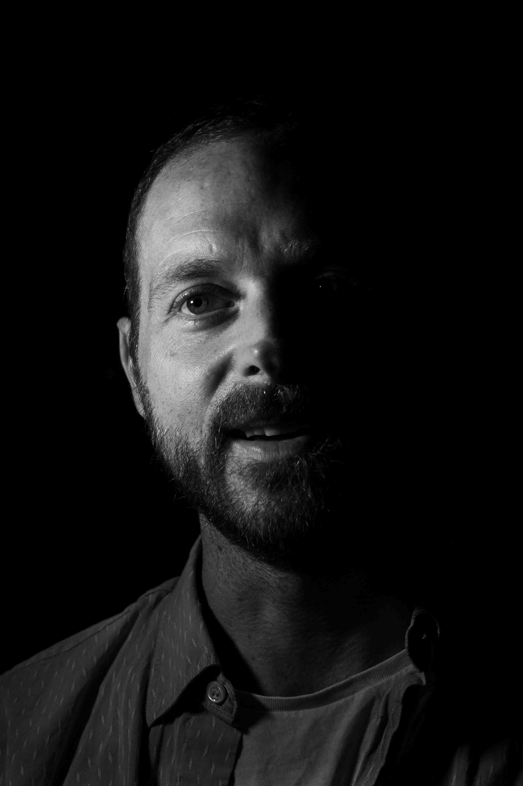
“Guilty, dismayed, hopeful”
Tim is a sustainability policy expert working to support governmental decision-making, with a background in energy, climate and development.
“I’ve made sacrifices, but there’s always more I could do”, he says, explaining his guilt that he doesn’t live as sustainably as he could. He tells me of the pangs of guilt he feels when it comes to food and travel: “since having kids, convenience often takes priority”. There is also the fact of being born into a society responsible for much of the catastrophe we’re currently facing. “This guilt motivates me in a way”, he explains, “it’s my responsibility to be part of the solution. But I always feel like I could dedicate more effort to increasing my knowledge and capacity to drive change”.
He describes his sense of dismay and alarm at the unfairness of the effects of environmental crises: “they make life so much harder for people in communities already facing challenges. It’s a perfect storm”. He seems particularly alarmed about poor decisions that entrench vulnerability in places most at risk from climate change. “I’ve seen this combination first-hand working in Vietnam”.
He tells me that it’s heartening to see progress with some decision-making – the change in administration in the United States and policy proposals in the European Union, for example. “I’m cautiously hopeful. These things tend to happen in waves”, he explains, referring to unforeseen circumstances that can slow or hasten progress. He tells me that the crises being seen in 2021 have fed more into a feeling of hope than despair: “Public consciousness is dawning and not only among youth, there is also a shift in my parents’ generation”, he says.
He tells me he feels hope “because there’s a broader acceptance that we can’t continue the way we are. This is driving support for hard decisions. At the same time, technological progress has consistently exceeded expectations. There are strong signs that things are going in the right direction”.
 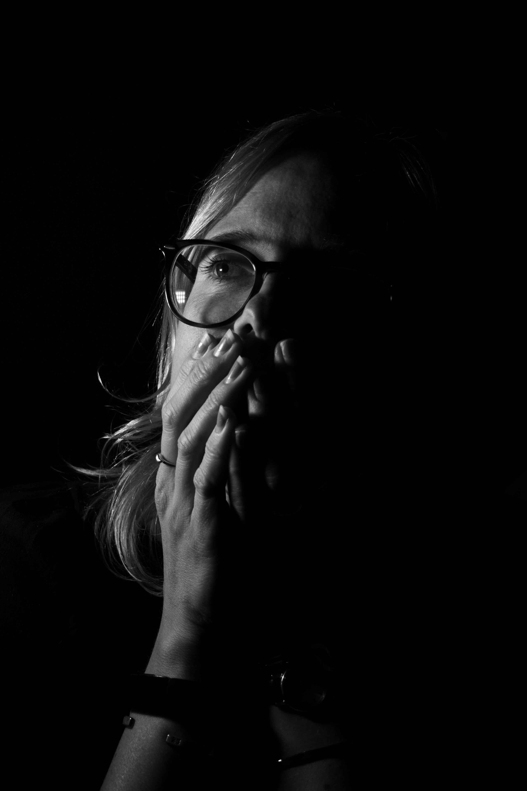
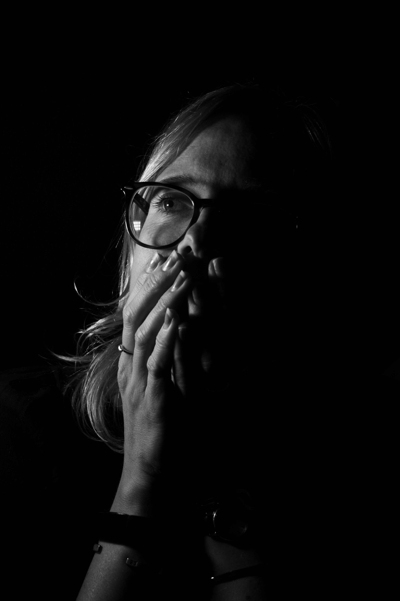

“Fickle, fraudulent, resolute”
Katy works in climate change adaptation policy, particularly focused on the cascading effects of climate change from one place to another.
She tells me that she feels fickle, flipping between an idealist and a realist view of how best to govern climate change: “Sometimes I feel we should be brave and dare to dream, to believe that climate change can transcend politics, that it can lead us to be better than we are today – more collaborative, more cooperative. Then I flip – no, we can’t be dreamers, we’re more likely to get the changes we’re calling for if they account for the way the world works today”. She tells me that she has different identities on different days of the week.
“I feel like a fraud in all sorts of ways”, she confesses. People working in climate change are – to her – amazing scientists who have worked for years trying to bring attention to what climate change is and what it means for the world. “That’s not me! I just write about this stuff!” she says. She tells me that her work sometimes involves arguing that others should live more sustainably, but finds it deeply uncomfortable that she doesn’t live a perfect life herself: “I feel like I embody those values when it’s easy to do so – but who am I to argue with others if that’s the case?”. She confesses to turning away from news about climate change: “It terrifies me – the stuff that we can’t fix – there’s no going back when lives have been lost, or species are extinct”. She explains that she skims the headlines but sometimes can’t face reading the articles in detail: “and that’s part of the problem – that we’re choosing not to see and look the other way because it’s uncomfortable to acknowledge”.
Despite all this, she feels resolute: “we just have to keep on going, there’s no other option. Even though it sometimes feels like you’re trying to swim across a vast ocean, you just have to keep swimming”. She tells me, with a shrug, that there’s nothing else to do, because at least it’s something.
I ask her if she feels hope: “Yes – hmm…?”, she questions herself, “Yes, I feel hope – I’m not sure I could do this job if I didn’t. But I can’t always articulate what I’m hoping for.”
 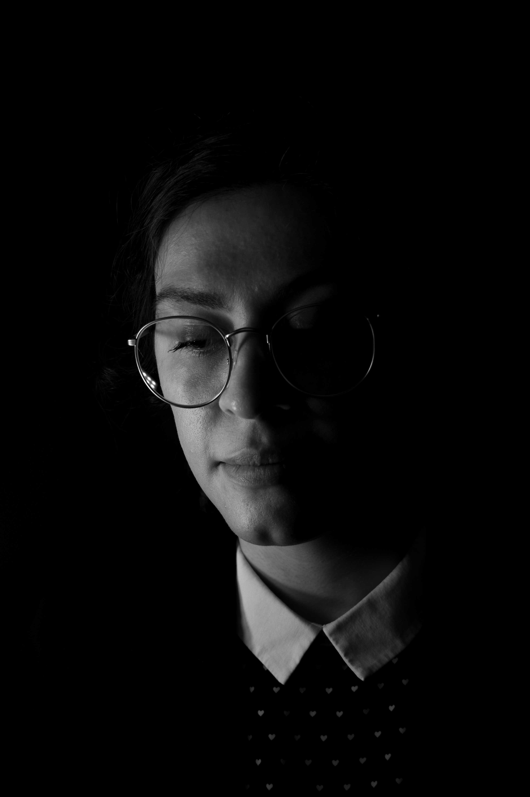
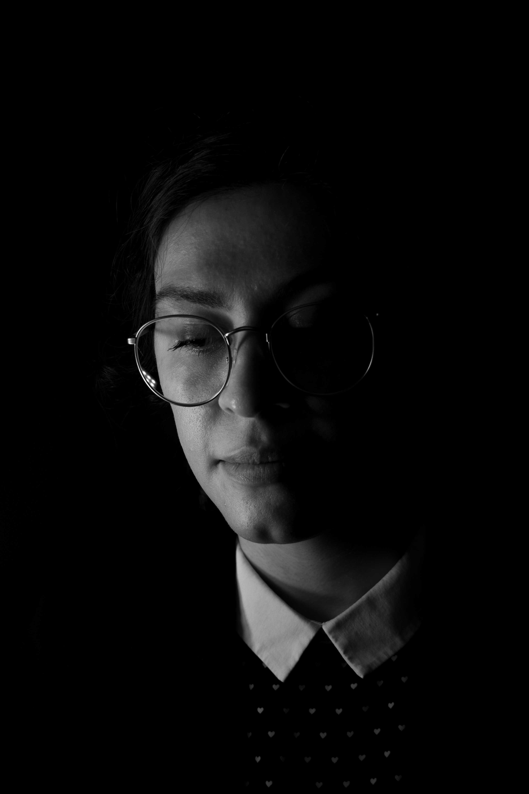